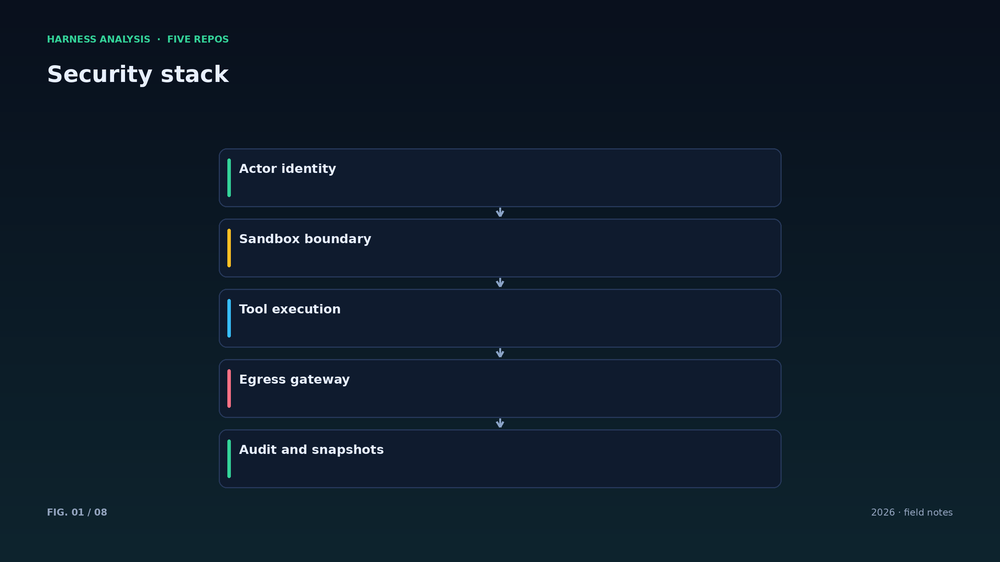
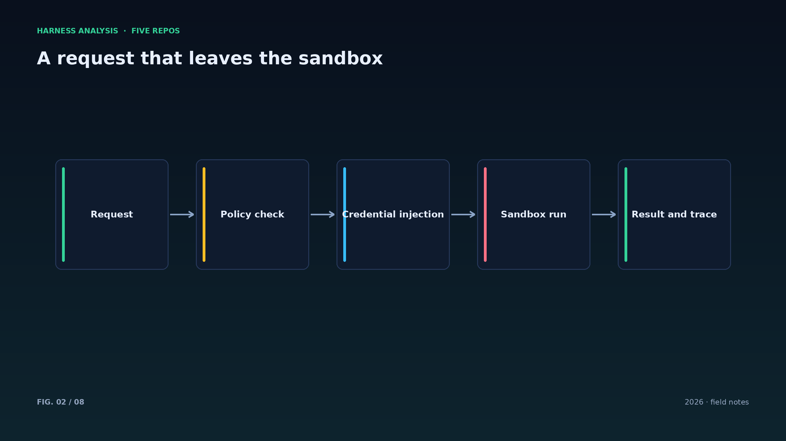
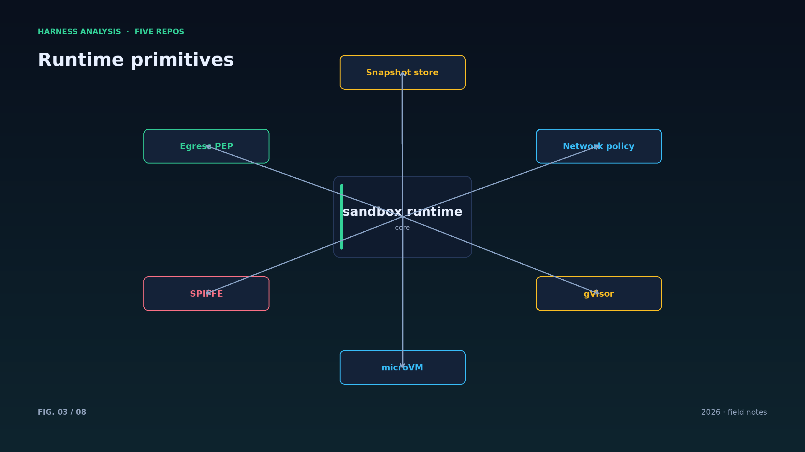
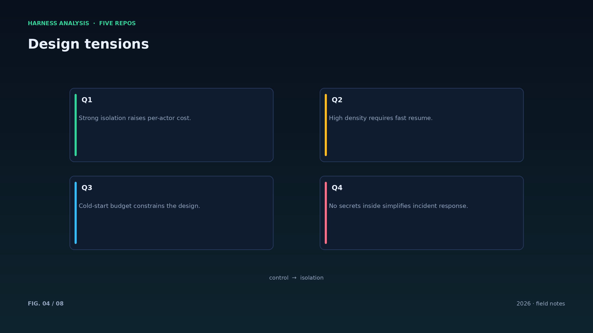
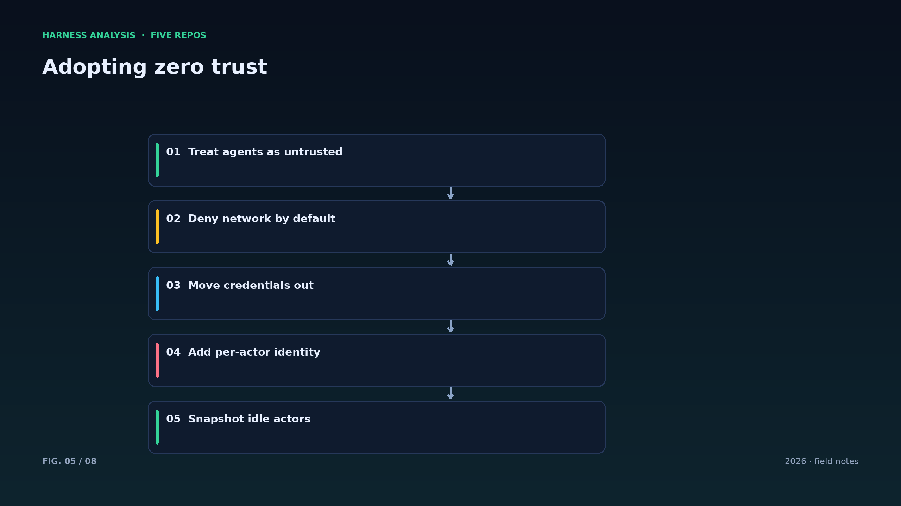
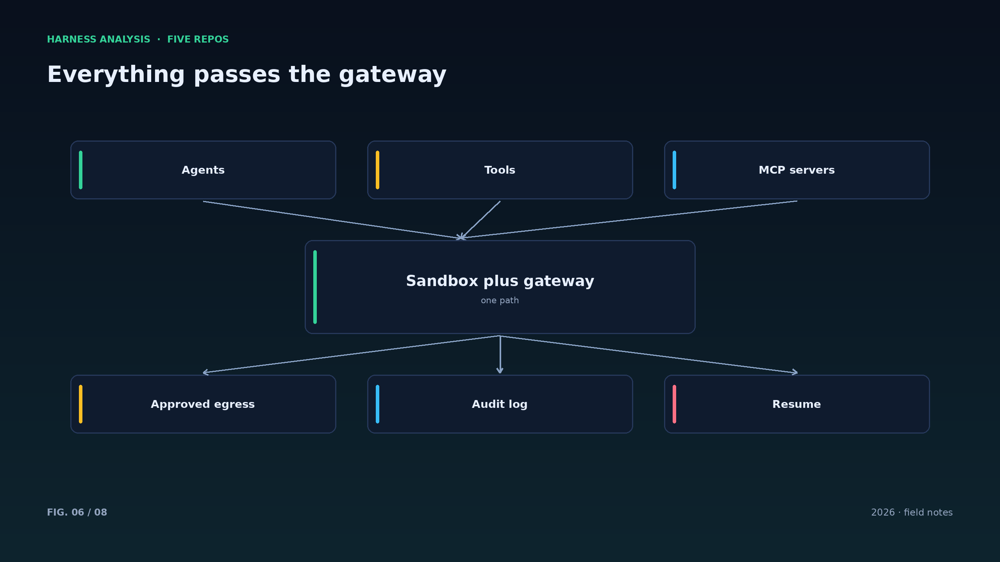
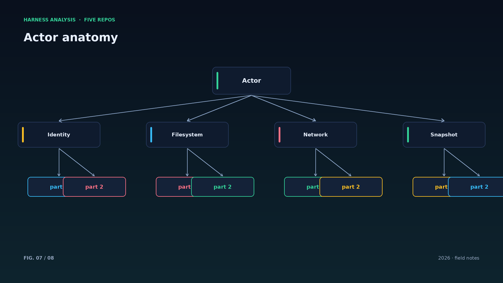
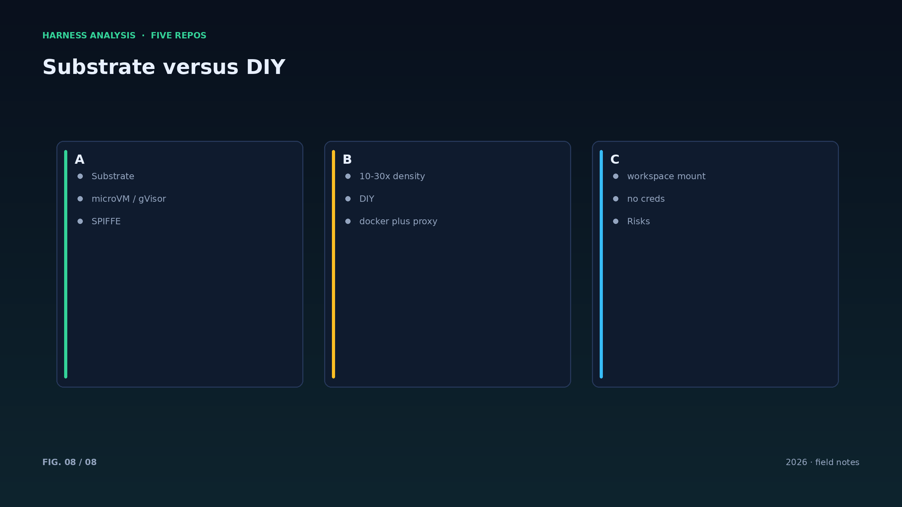

harness analysis · 05
零信任沙箱：Substrate 如何把“不可信”当作默认假设
Zero-trust Sandboxes: Substrate Treats Untrusted as the Default
Substrate 的每个 actor 都按“可能被攻破”设计：微虚拟机隔离、默认拒绝网络、凭据不进沙箱。这一篇拆解它如何做到安全与密度兼得。
Substrate 的模型很干净：actor 是有状态的 agent 工作负载，worker 是预热好的执行槽位。空闲 actor 被快照挂起，请求到来时恢复——恢复时间控制在 500 毫秒内，每秒可完成 500 次激活，密度比普通容器高一个数量级。
安全设计围绕三个“不”：不共享边界（gVisor 或 microVM 隔离），不默认出网（默认拒绝、只允许经过网关），不持有凭据（凭据由 egress 网关在外侧注入）。即使提示注入攻破了 agent，它也拿不到可直接利用的密钥。
身份是第三条腿：每个活跃 actor 获得短时效的 SPIFFE 证书，网关可以按策略签发 JWT。身份与网络策略绑定，审计时能回答“哪个 agent、以什么身份、访问了哪里”。
这套设计的代价是工程复杂度：快照、恢复、身份轮转、网关策略都要自己维护。但对“成千上万不可信 agent 共享集群”的场景，这是唯一能同时满足安全与成本的路线。
快照不是备份：快照服务的是“恢复继续干活”，备份服务的是“灾难后重建”。两者要分开设计，别指望一套机制解决两个问题。
出口策略要能解释：被拒绝的请求应返回“为什么拒绝、找谁开白名单”，否则 agent 会把它当作随机错误不断重试，浪费预算。
沙箱的边界要能被验证：定期做逃逸测试与出口策略测试，把“假设安全”变成“证明安全”。
快照里可能包含敏感数据：落盘加密、生命周期管理、访问审计，一个都不能少。
对大多数团队，Substrate 的启示不是自建 microVM 平台，而是把“凭据不在工作负载里”这条原则抄走——它用最低成本消除了最高危的风险。
Architecture figures








ENGLISH
Zero-trust Sandboxes: Substrate Treats Untrusted as the Default
Every Substrate actor is designed as if it might be compromised: microVM isolation, default-deny networking, credentials kept outside. This piece explains how it gets safety and density together.
Substrate's model is clean: actors are stateful agent workloads; workers are warm execution slots. Idle actors are snapshotted and suspended, then resumed when requests arrive — resume under 500 milliseconds, 500 activations per second, an order of magnitude denser than plain containers.
Security rests on three negations: no shared boundary (gVisor or microVM isolation), no default egress (deny all, pass through a gateway), no credentials inside (the egress gateway injects them outside). Even if prompt injection breaks the agent, it holds no directly usable keys.
Identity is the third leg: every active actor gets a short-lived SPIFFE certificate, and the gateway can mint per-actor JWTs. Identity tied to network policy means audits can answer which agent, under which identity, reached what.
The price is engineering complexity: snapshots, resume, identity rotation and gateway policy are all yours to run. But for thousands of untrusted agents sharing a cluster, it is the only route that satisfies security and cost at once.
Snapshots are not backups: snapshots resume work, backups rebuild after disaster. Design them separately instead of expecting one mechanism to solve both.
Sandbox boundaries must be tested: escape attempts and egress-policy tests on a schedule turn assumed safety into demonstrated safety.
Snapshots may contain sensitive data, so encryption at rest, lifecycle limits and access audit are not optional. For most teams the lesson is simpler than building microVMs: keep credentials out of the workload.